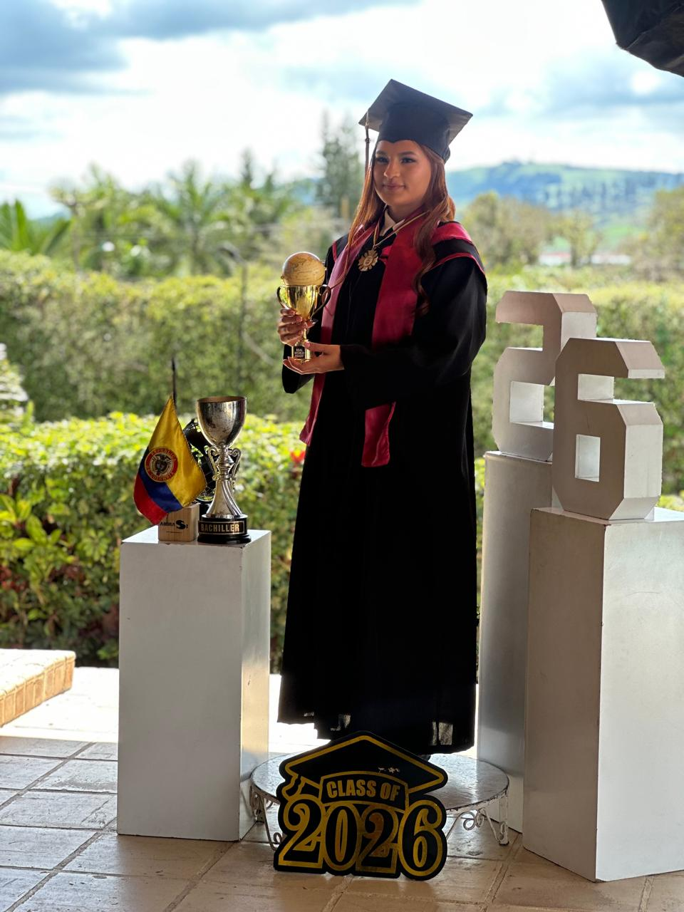

¡Hola, soy Nicolle!
Nicolle Dayana Giraldo Correa
Mi nombre es Nicolle Dayana Giraldo Correa, soy una persona soñadora, cariñosa y con muchas metas por cumplir. Me considero alguien que tiene un gran corazón, que valora a su familia, a las personas que ama y los pequeños momentos de la vida. Me gusta aprender cosas nuevas, compartir con las personas que quiero y trabajar por mis sueños. Sé que todavía tengo mucho por aprender y mejorar, pero cada experiencia me ayuda a crecer como persona. Mi mayor deseo es salir adelante, cumplir mis metas y sentirme orgullosa de todo lo que he logrado.
Mis aspiraciones educativas
Quiero continuar con mis estudios, adquirir nuevos conocimientos y prepararme para tener un buen futuro. Me gustaría aprender sobre el mundo de la belleza, el maquillaje, el cuidado de la piel y la estética. Mi propósito es desarrollar mis habilidades, descubrir nuevas oportunidades y estudiar algo que realmente me apasione. Quiero esforzarme para alcanzar mis sueños y convertirme en una gran profesional.
Mis intereses
Estas son algunas áreas que forman parte de mi personalidad y de las cosas que disfruto.
Mis pasatiempos
Escuchar música, salir, compartir con las personas que quiero y aprender cosas nuevas.
Mis gustos
La belleza, el maquillaje, el cuidado de la piel y todo lo relacionado con la estética. También me gusta viajar y conocer cosas nuevas.
Mi personalidad
Soy amable, soñadora, alegre, sensible y perseverante.